> nieuwsbrief > 2010 - nr 3
Inhoud
Hernieuwen
ledenbijdrage 2010
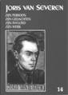Wie
totnogtoe naliet zijn
bijdrage te vereffenen kreeg ondertussen een herinneringsbrief in de
bus.
Daarin werd eraan herinnerd dat de basisbijdrage 25 € bedraagt,
in ruil
waarvoor men zich ook in 2010 van een abonnement op onze Nieuwsbrief
Joris van Severen en van het – reeds 14e – Jaarboek
Joris van Severen – zijn persoon,
zijn gedachten, zijn invloed, zijn werk verzekert. De
jaarboeken werden ondertussen verstuurd – en wie meteen ook de
nieuwe Joris van Severen-biografie van
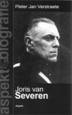Deze
nieuwe biografie over
Joris van Severen kan
voortaan niet meer via ons Studiecentrum
Joris van Severen geleverd worden. Ze kan wel nog via de auteur
besteld
worden, mits overschrijving van 16,50 € (verzendkosten inclusief) op
rekening
nr. 462-7286791-52 van
Belangrijke teksten rond Joris van Severen
Volgende belangrijke (maar zo goed als
onvindbaar
geworden) teksten werden door T. Wenzel in het kader van het 70e
sterfjaar van
Joris van Severen ingescand als PDF-document. Zo zijn Joris
van Severen - Vader des vaderlands (4 door Louis Gueuning
tijdens WO II gehouden herdenkingsredes, namelijk: De mens
– Leider – Vader der Nationale Revolutie en Dietse
politieke wijsheid) (74 pp.), Joris
van Severen – Boodschap over de Dinasozending (20 p.) en Zending van het volk der Nederlanden (23
pp.) terug beschikbaar voor belangstellenden. Waarvoor heel veel dank
aan T.
Wenzel voor dit spontaan initiatief. We sturen u op eenvoudig verzoek
deze
teksten (als PDF-bestand) graag per
e-post door.
70
jaar
later: terugblik op 22 en 23 mei
2010
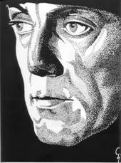
De Stichting Joris van Severen
kan
andermaal terugblikken op een
geslaagde en stijlvolle herdenkingsmis in het Slot van Male. Fragmenten
uit de
homilie van de E.H.
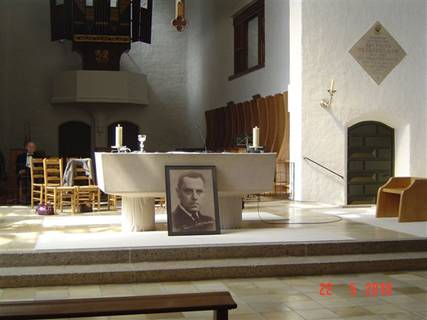 In
de
stemmige kapel van het Slot van Male
Herdenking aan
het
Bourgoensche Cruyce
Vooraf, de in voormiddag,
werd bij de
toegangspoort tot het Bourgoensche Cruyce,
het voormalige woonhuis van Joris van Severen in de Wollestraat te
Brugge -
waar een gedenkplaat de namen van de vier Brugse slachtoffers van het Bloedbad van Abbeville memoreert - door
het Brugse Abbeville Comité een korte
herdenkingsplechtigheid georganiseerd. Na enkele korte toespraken –
waarbij
o.m. Tim Trachet, de maker van de TV-documentaire over het bloedbad,
aan het
woord kwam – werd de plechtigheid afgesloten met een bloemenhulde aan
de
gedenkplaat, door o.m. een afgevaardigde van het Brugse Stadsbestuur,
van de
Provincie West-Vlaanderen en van het Ministerie van Justitie, maar ook
namens
de Stichting Joris van Severen. Onder de aanwezigen o.m. Mevr. Gaby
Warris, de
laatste overlevende van het bloedbad en een kleindochter van Jan
Rijckoort.
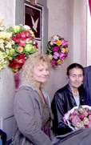 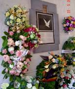 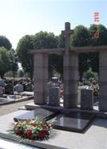
Links: een kleindochter van Jan Rijckoort,
samen mat Gaby
Warris. Midden: de bloemenweelde aan de gedenkplaat aan het
Boergoensche
Cruyce. De krans met de Belgische driekleur was deze namens de
Belgische
minister van justitie. Rechts: het graf te Abbeville
Groet aan het
graf te
Abbeville
Op zondag 23 mei
werd dan een gezamenlijk bezoek gebracht aan het graf van Joris van
Severen en
Jan Rijckoort. Tijdens de korte plechtigheid, met neerlegging van een
bloemstuk
vanwege de Stichting Joris van Severen, werd
middels een korte bezinningstekst, het Appel van de 17 Provinciën en
het Gebed
voor de tijden van gevaar herinnerd aan wat 70 jaar terug gebeurde.
Zeventig voorbijgegane
jaren waarop elk jaar nu eens meer, dan weer minder mensen zich
omstreeks de
datum van 20 mei rondom het dubbelgraf van Joris van Severen en Jan
Rijckoort
schaarden in het teken van gedenken en herdenken Decennialang waren dat
allereerst de getrouwen van het Verdinaso, maar hun generatie is
dusdanig
uitgedund dat jongere generaties stilaan die piëteitsvolle taak op zich
dienen
te nemen. De hoop er in 2010 – 70 jaar later – nog eens met velen te
zijn om
die zinvolle traditie te bestendigen bleef onvervuld. Elders in dit
nummer
leest u evenwel over het hoopvolle experiment van maart jongstleden:
over het
toen doorgegane jongerenbezoek aan het dubbelgraf.
Naar verluidt
brachten in de namiddag van 23 mei ook nog de deelnemers van de
Normandië-reis
van het Davidsfonds, o.l.v. dr. Luc de Vos, een bezoek aan het
dubbelgraf te
Abbeville.
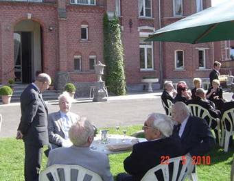
Tijdens de receptie in het Hof van Male, na
de
herdenkingsmis
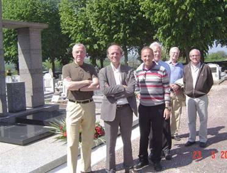
Aan het graf te Abbeville
(Met dank aan
Marc Witters, Lommel, voor de foto’s)
Homilie te Male op 22 mei 2010
Gys
van Ryckeghem
[…] De Geest van God maakt – in het
Pinksterverhaal -
van angstige mensen stoutmoedige verkondigers van de goede boodschap.
Ze
sluiten zich niet langer op in zichzelf maar treden naar buiten. Ze
zijn niet
langer bekommerd om eigen belang, maar komen op voor hun medemensen: ze
komen
op voor broederlijkheid, rechtvaardigheid en vrede.
Zo was ook Joris van Severen rondom wiens
gedachtenis
wij hier samenzijn. In hem leefde iets van het heilige vuur van
Pinksteren. Hij
sloot zich niet op in zichzelf of in zijn eigen kleine kring. Hij trad
moedig
en zelfbewust naar buiten. Hij verkondigde een boodschap. Hij leefde
met een
grote droom, met een groots ideaal voor ogen. Hij zag een nieuwe
dageraad voor
zijn Vlaamse volk: zijn volk dat klein en onmondig gehouden werd door
onderdrukkende staatsstructuren. Met de inzet van heel zijn
persoonlijkheid
heeft hij daarvoor geleefd, tot de dood toe.
Zeventig jaar na zijn dood blijft hij
leven. Hij
blijft leven in het hart van veel mensen. Zijn geest blijft hen
bezielen. Zijn
zin voor orde, zijn streven naar waarheid, zijn misprijzen voor
alledaagsheid
en kleinzieligheid, zijn hoogstaande levensstijl, zijn ruime blik die
over
grenzen heen kon kijken, zijn onvoorwaardelijke trouw aan zijn Vlaamse,
zijn
Nederlandse volk.
De geest van Joris van Severen roept ons op
om bewust
te blijven van ons groot verleden, maar om er ook niet aan vast te
zitten. Hij
roept ons op om naar de toekomst te kijken en binnen het groeiende
Europa de
nieuwe mogelijkheden te zien en te baat te nemen.
Laten we dan, op dit Pinksterfeest bidden
dat Gods
Geest alle ontreddering en kleinmoedigheid uit ons hart weg zou nemen,
dat Hij
ons offervaardig zou maken, dienstbaar en vol mededogen; dat Hij ons
hart
bedacht zou maken op recht en gerechtigheid, dat Hij ons geestdriftig
en
stoutmoedig zou maken om in de geest en naar het woord en voorbeeld van
Joris
van Severen ons in te zetten voor het welzijn van Vlaanderen, voor het
heil der
Nederlanden. Dat wij vindingrijk zouden zijn, bekwaam en sterk om een
nieuwe
wereld uit te bouwen waar geen oorlog en geen haat meer zijn, maar
vrede en
vriendschap in Jezus' naam.
Abbeville 2010
Wij staan hier voor de graftombe van Joris
van Severen
en Jan Rijckoort. Dit graf bevat nog slechts enkele luttele resten stof
van wat
ooit de leider was van een politieke formatie zoals de Nederlanden er
voorheen
nooit een gekend hadden. Slechts enkele luttele stoffelijke resten.
Méér niet.
En nu zal ik iets zeggen dat mogelijk
schokkend
overkomt. Deze resten stof van de dode Van Severen interesseren ons
geen zier.
De dode Van Severen, dat is een zaak tussen hem zelf en zijn Schepper.
En daar
is ons menselijk begrip te klein voor.
Maar wie ons wél interesseert, dat is de
LEVENDE Joris
van Severen, die ofschoon tot stof vergaan, ons nog altijd bezielt en
de weg
toont. De Van Severen die ons toeriep dat: “in
het duistere gewoel der zich thans in razend tempo ontwikkelende
gebeurtenissen
en der hals over kop opgeworpen vraagstukken”, onze “allereerste
en aller-dringendste nood“ er een was “aan klaarheid en
rustig inzicht”. Bemerkt
gij ook hoe actueel die woorden nog altijd zijn?
Ik weet dat sommigen daarop zullen
antwoorden dat hij
als staatsman tenslotte nooit zijn doel bereikt heeft. Wat inderdaad
onloochenbaar waar is. Nog erger: zij zullen ons wijzen, soms zelfs met
een
pervers genoegen, op zijn kleine kanten, zijn talrijke menselijke
tekortkomingen.
Maar diezelfde geesten houden er in hun
bekrompenheid
dan geen rekening mee dat elke mens naast een concreet, een materieel
vaderland, met zijn grenzen, instellingen en wat nog meer, nog zo iets
heeft
als een geestelijk vaderland. Een
geestelijk vaderland waarin hij zich geborgen voelt, waarin zijn geest
zich
vrij ontplooien en ontwikkelen kan om tenslotte thuis te komen bij God,
“bron
van alle recht en alle orde”.
In tijden als deze wordt het
pas duidelijk wat het betekent een verleden en een innerlijk erfgoed te
hebben,
dat onafhankelijk is van toeval of wisselende tijdsomstandigheden. Het
besef
door een geestelijke overlevering gedragen te worden die eeuwen terug
gaat,
geeft iemand, dwars door alle tijdelijke moeilijkheden heen, het zekere
gevoel van
geborgenheid.
Van Severen heeft dit zéér goed begrepen
toen hij ons
voorhield:
·
dat
de staat slechts een middel was, weliswaar een
noodzakelijk middel, maar geen doel op zich;
·
dat
in het centrum van het leven de mens staat, en dat het
leven culmineert in de persoonlijke vervolmaking van ieder van ons.
En dát in een tijd, beste vrienden, dat
leiders van
grote mogendheden hun volk voorhielden dat de staat, het ras of de
klasse het
middelpunt en het enige doel van het menselijke bestaan waren. “Du bist nichts, dein Volk ist alles”,
of: “het bloed van de Goelag is meststof
voor de toekomst van de klasse.”
Wij vragen hier aan dit graf, aan deze
graftombe, die
slechts enkele luttele stoffelijke resten bewaart, om de kracht te
vinden om
ons dát geestelijk vaderland van Van Severen eigen te maken. Die kracht
zal ons
maken tot wat wij als mens zijn.
Zijn, écht
zijn! En
dat is niet de titulatuur van een hoog ambt of dito functie op uw
naamkaartje
hebben staan prijken. Of op uw doodsbrief.
Vrienden, samen zij wij getuigen van de
ineenstorting
van een wereld. En geloof mij, het is geen fraai beeld. Maar u bent ook
de
bevoorrechte getuigen van de dageraad van een nieuwe beschaving,
waaraan jullie
geroepen zijn mee te bouwen en die Joris van Severen ons door zijn dood
heeft
verdiend. Zijn dood was als het ware de handtekening onder zijn
levenswerk.
Jongerenbezinning aan het graf van Joris van Severen
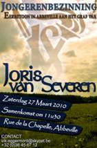Dit jaar,
is het 70 jaar geleden dat Joris van Severen
te Abbeville, op de zuidgrens van de oude Nederlanden, door Franse
soldaten in
paniek vermoord werd, hielden jongeren uit de Noordelijke en de
Zuidelijke
Nederlanden een waardige bezinning aan zijn graf te Abbeville. De wijze
waarop
zij getuigenis aflegden valt na te lezen in Confiteor,
het tijdschrift van Kasper, en ook op
hun webpagina’s (www.kasper-gent.org).
Bij die gelegenheid sprak ook
Toespraak namens Kasper
On nous
a demandé de formuler une réponse à la question suivante: “Joris van
Severen,
que peut-il signifier pour la jeunesse d’aujourd’hui?” A ce moment,
camarades,
nous nous rappelions le trajet que nous avons parcouru pendant la
naissance de
notre mouvement, puisque nous avons trouvé une réponse en créant une
nouvelle
réunion de camarades.
Nous
avons discerné un malaise profond qui rongeait notre communauté et nos
possibilités à nous développer. Désormais nous nous rendions compte de
l’impossibilité à résoudre ces problèmes au moyen de fausses pistes
trop
fréquentées par les mouvements réactionnaires nationalistes, par le
nationalisme pour l’argent et par les politiques politiciennes bornées.
En vue
de cette problématique, nous étions en train de chercher une solution
nouvelle
et radicale. Et voilà Joris van Severen. Car même à sa propre époque,
Joris van
Severen a développé des idées révolutionnaires qui rendaient toutes les
parties
stupéfaites. Aussie aujourd’hui ses idees originele restend
d’importance.
Mais,
chers amis, il faut que nous soyons honnêtes au début de notre
exposition, en
nous demandant pourquoi nous faisons cette exposition en Français? Nous
avons
fait ce choix consciemment dans l’esprit de Joris van Severen, parce
qu’il
avait déjà conclu de bonne heure –et voilà pourquoi sa nouveauté – il
avait conclu
que le mouvement Flamand défectueux et immobile n’aurait en n’aura
jamais
d’avenir dans l’Europe de demain. Et il a pris la décision de reprendre
une
modèle viable, le bastion des Pays-Bas bourguignons.
Dans
ses pensées nous pouvons reconnaître un homme qui faisait preuve d’une
ouverture pragmatique et d’un pouvoir à créer des synthèses. Comme le
peuvent
d’abord la vaste quantité et diversité d’œuvres politiques et
littéraires qu’il
a consulté, puis son propre travail intellectuel dans ses publications
en enfin
le fait qu’il a osé de défier et de questionner l’ordre consensuel. Une
telle
attitude critique et audacieuse ne mérite que notre admiration.
Il y a
quelques-uns qui reprochent un comportement superficiel et capricieux à
Joris
van Severen justement dans l’intérêt de cette attitude. Il n’en est
rien, car
nous pouvons discerner un personnage prêt à tenir parole et à appliquer
ses
paroles dans ses actions. Et tout cela malgré toutes les critiques
qu’il aurait
et aura reçu. Un prophète ne se fait jamais entendre par son propre
pays.
Tout ce
que nous avons déjà dit rappelle un effort continuel d’un personnage
indépendant pour atteindre la perfection morale et intellectuelle, et
tout cela
sans se rendre compte des facteurs externes et séduisants, comme la
vile soif
du gain d’un capitalisme amoral, comme l’espoir d’une position dans un
système
parlementaire parasite, comme une manipulation sans scrupules des
masses
inconscientes. Notre jeunesse ne veut qu’essayer à reprendre cette
attitude
vraiment noble et par conséquence, à éviter ces trois démons avec
vigilance: un
nationalisme engendré par l’appât qui tente à développer son pouvoir
par des
constructions impénétrables et des réformes d’état.
Bref,
les Pays-Bas comme modèle politique, une ouverture d’esprit capable à
créer une
synthèse morale en un état solidariste viable, ces trois idéaux forment
l’héritage de Joris van Severen, un héritage qui peut inspirer
jusqu’aujourd’hui notre jeunesse à former un nouveau et honnête idéal.
Voilà
pourquoi je veux conclure mes mots avec le dicton.
Etre, être vraiment ce que l’on est…
Jean-Pierre Destrebecq, Hainaut
Etre, être vraiment ce que l’on
est appelé à être: là est l’essentiel d’une vie humaine.
Amis qui êtes jeunes encore.
Ensemble, nous assistons à l’écroulement d’un monde. Et, croyez-moi,
l’image
n’est pas belle.
Mais vous êtes aussi les témoins
privilégiés de l’aube d’une nouvelle civilisation, qu’ensemble vous
allez
contribuer à édifier et que, par sa mort, Joris van Severen a méritée.
Sa mort
signait l’œuvre de sa vie.
C’est pourquoi, en tant qu’homme
âgé, je vous suis reconnaissant d’avoir voulu prendre part avec mes
amis et
moi, à cette commémoration.
Des mots me viennent à l’esprit,
quelques mots seulement qui en disent plus long que de longues phrases.
Solitude, fidélité… Sangs mêlés.
Sacrifice d’une vie, de vies
broyées par le rouage meurtrier de la bêtise, de la folie humaine.
C’était il y a septante ans…
C’était hier, c’est aujourd’hui.
Faisons silence. Ici, en ce lieu,
le silence parle plus encore que les paroles.
Ontleende Joris van Severen zijn corporatisme-concept aan Landauer? (*)
Piet
Tommissen, Ukkel
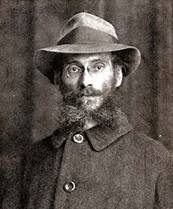
Gustav
Landauer
In enkele in de JvS-Nieuwsbrief
verschenen artikels wordt betoogd dat Van Severen zijn idee van een
corporatieve orde aan Franse denkers ontleend heeft: aldus Rudy Pauwels
(1932-2008) op p.
Ik zeg wel: “een voorzichtig antwoord’.
Want het is
niet omdat in iemands bibliotheek diverse publicaties van een bepaalde
auteur
staan (b.v. van Jules Verne of van Karl May) dat de bezitter ervan de
invloed
van die auteur ondergaan heeft. zomin als het ontbreken in die
bibliotheek van
publicaties van een andere auteur invloed van deze laatste a priori
uitsluit.
Voorts ben ik van mening dat in een groot
aantal
gevallen de tijdsgeest zowel invloed in de hand kan werken als die
invloed
uitsluiten. In het onderhavig geval dient m.i. rekening te worden
gehouden met
het feit dat voor, tijdens en korte tijd na Wereldoorlog I ook in
Vlaanderen
(in eerste instantie in West- en Oost-Vlaanderen) het anarchisme een
zekere
aantrekkingskracht uitgeoefend heeft, b.v. op August Vermeylen
(1872-1945). Men
vergete ten andere niet dat de echtgenote van de Gentse hoogleraar
Julius Mac
Leod.(1857-1919), Florence Hélène Maertens, het opus magnum van
Peter
Kropotkin (1842-1921), de leider van één der dominerende
anarchisten-‘scholen’,
in het Nederlands heeft vertaald.1
Ook aan Van Severen is de anarchistische
bekoring niet
voorbijgegaan, zij het slechts gedurende een korte tijd. Men is
derhalve
geneigd te denken dat hij Landauer best schatplichtig kan geweest zijn.
Landauer was daarenboven niet de eerste de beste en het valt op dat
momenteel
zowel in Duitsland2 als in Frankrijk3 werk van
hem
heruitgegeven, respectievelijk vertaald, en zijn gedachtegoed opnieuw
onder de
aandacht gebracht wordt.4
Ofschoon de van Joodse origine Landauer5
zijn universitaire studies niet beëindigde heeft hij een indrukwekkend
aantal publicaties
op zijn naam staan. Eerlijk gezegd: men staat verbaasd over de omvang
van die
productie. Hij vertaalde werk van meester Ekkehard (1260-1328) (1903),
Oscar
Wilde (1854-1900) (1904 en 1907; in samenwerking met zijn tweede
echtgenote,
Hedwig Lachmann (1865-1918), Kropotkin (1904), Bernard Shaw (1856-1950)
(1908),
Rabindranath Tagore (1861-1941) (1915; weerom in samenwerking met zijn
tweede
eegade) en Walt Whitman (1819-1892) (1919), schreef eigen boeken zoals Skepsis
und Mystik (1903) en - op aandringen van zijn vriend, de bekende
Joodse
theoloog Martin Buber (1878-1965), Die Revolution (1907)6
-
en publiceerde in een 50-tal tijd-schriften en kranten maar liefst meer
dan 500
essays en artikels.
Nochtans heeft Landauer zijn bekendheid in
eerste
instantie aan zijn politieke standpunten te danken en gaat hij niet
zonder
reden als de belangrijkste Duitse theoreticus van het anarchisme door,
weliswaar van een eigen variant, namelijk van een niet op geweld
stoelend
anarchisme, maar eentje met een libertaire samenleving én een cultureel
socialisme als streefdoel. Het was Landauer niet om een revolutie van
de
samenleving, maar om de ‘Vergesellschaftung’ van de revolutie te doen.
Te
noteren dat hij zich distantieerde van het zionisme en dus ook van de
posities die
de Joodse vrienden die hem het naast stonden, o.m. Martin Buber,
innamen.7
Wegens plaatsgebrek moet ik aan een proeve
van
synthese van die zienswijze verzaken.8 Toch ware het fout
één aspect
onvermeld te laten, te weten de gelijkenis van de kern van die synthese
met de
door Pierre-Joseph Proudhon (1809-1865) gelanceerde “anarchie
positive”: “le
plus haut degré d’ordre dans la société s’exprime par le plus haut
degré de
liberté individuelle”, of concreter uitgedrukt: elk individu “serait
également
et synonymement producteur et consommateur, citoyen et prince,
administrateur
et administré”.
Hoe dan ook, ik begrijp niet hoe
Het bestaan van die Franse vertaling
bewijst dat
Landauer een bekende figuur was; hij correspondeerde o.m. met
Om terug te komen op Van Severen, die het
Duits
waarschijnlijk voldoende machtig was, is het best mogelijk dat hij
reeds eerder
de een of andere tekst van Landauer gelezen had. Het is ook mogelijk
dat hij in
een tot op heden niet gepubliceerde paragraaf andermaal op hem is
teruggekomen.
Tot nader order blijven dat hypothesen en om die reden heb ik het
wijselijk
geoordeeld in de eerste paragraaf te spreken over een “voorzichtig
antwoord” op
de in de titel geformuleerde vraag.
Noten
(*) De bibliografische hulp van de heren
Cailliau en –
vooral - Dr.
1 P. Kropotkine, Wederkerig
dienstbetoon, een factor der
evolutie, A’dam: Van Looy, 1904, 416 p.
2 Vgl. o.m. (a) G. Landauer, Auch
die Vergangenheit ist Zukunfi. Essays
zum Anarchismus (ed. door Siegbert Wolf [°1954], Frankfurt a. M.:
Luchterhand, 1989, 301 p. (pp. 7-34: inleiding; pp. 273-282: noten; pp;
283-297: bibliografie; pp; 298-301 :chronologische biografie); (b) Zeit
und
Geist. Kulturkritische Schriften 1890-1919 (ed. door Rolf
Kauffeldt en
Michael Matzigkeit), Regensburg: Boer, 1997, 373 p. (pp 7-12: voorwoord
; pp.
305-323: foto’s; pp. 327-343: noten; pp. 345-354: chronologische
biografie; pp.
355-370: bibliografische bijlagen).
4 Vgl. o.a. het anonieme Wikipedia-artikel:
http:/nl.wikpedia.org./wiki/
Gustav Landauer, 11 p.
5 Ik
vermeld Landauers Joodse afstamming, omdat zijn origine in zijn denken
een
beduidende rol heeft gespeeld. Het spijt me het bij die vaststelling te
moeten
laten.
7 Vgl. Michael Löwy, “Le
Messianisme romantique de Gustav Landauer”, in: Archives
des sciences sociales des
religions, (Paris), 60e jg., nr. 1, 1983, pp. 55-66.
8 Een overzichtelijke synthese
bestaat trouwens al; vgl. Philippe Despoix,
“De la science à l’histoire: l’antipolitique de Gustav Landauer”, in: Romantisme, (Paris), 25e jg., nr. 87,
1995, pp. 13-28.
b) De auteur en kenner van de
grote dichter Friedrich Hölderlin (1770-1843) W. Michel moet voor
Landauer een
zwak hebben gehad; vgl. zijn brochure Essays über Gustav Landauer,
Romain
Rolland, Friedrich Hölderlin: die Metaphysik des Burgers, Hannover:
Steegemann. 1920, 21 S.. nr.
33-33a in de reeks ‘Die Silbergaüle’. Het Landauer-essay werd
gedeeltelijk
overgenomen in Hansjörg Viesel (°1941),
Die Münchner Räterepublik und die Schriftsteller. Literaten an der Wand, Frankfurt a. M.: Büchergilde
Gutenberg. 1980. 831 p.: cf. pp. 314-3 17.
b) H. Roland Holst-Van der Schalck, Gustav Landauer. Zijn levensgang en
levenswerk, Arnhem, Van Loghum Slaterus, 1931, 160 p., nr.
11 Voor een bondig relaas van de feiten, vgl.
vt 10 punt a),
pp. 422-423.
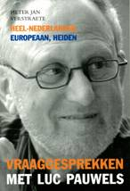In zijn
zopas verschenen boek bundelt onze
jaarboekmedewerker en vzw-lid
Als tiener en jonge twintiger had
De door
De publicatie telt 80 pp. met 14
illustraties. Ze kan
door de leden van ons Studiecentrum besteld worden door overboeking van
12.50 €
(verzend-kosten inbegrepen) op rekeningnummer 462-7286791-52 van P.J.
Ver-straete, Burgemeester Danneelsstraat 83, 8500 Kortrijk, met de
vermelding: “Heel-Nederlander, Europeaan, heiden”.
Willem
Willy
Levecke, echtgenoot van
mevrouw
Margaretha Declercq, oudste dochter van wijlen Jules Declercq (Vlaams
voorman
1897-1955 en medestichter van het Verdinaso). Willy werd geboren te De
Panne op
19 december 1916 en is overleden te Oostende op 9 april 2010. "Zijn
hart klopte voor Vlaanderen, voor de
Kunst en de Klassieke
muziek.” Willy was bijzonder Vlaamsgezind. Hij leerde zijn toekomstige
echtgenote Margriet kennen op de landdag van het Verdinaso in het
najaar 1938
te Gent. Op diezelfde landdag luisterde Willy naar
redevoeringen van Joris van
Severen en Jules Declercq. Het was de periode binnen het Verdinaso van
de
nieuwe marsrichting. Willy behoorde tot diegene die trouw bleven aan de
Van
Severen van de eerste marsrichting. Daarna had hij het moeilijk hem nog
te
volgen tijdens de nieuwe marsrichting. Hij prefereerde een zelfstandige
Vlaamse
staat boven een Vlaanderen binnen België als deel van de Nederlanden.
Niettemin
had hij voor van Severen waardering en respect. Willy was een man met
een
uiterst gedegen kennis op geschiedkundig vlak. Een bijzonder
intellectueel
iemand zonder “grote”diploma's. (LS)
In deze rubriek verwijzen we
zonder veel commentaar naar recente publicaties waarin Joris van
Severen en/of
het Verdinaso vermeld worden. We citeren de meest treffende passussen
woordelijk zonder daarin volledigheid na te streven. We verzoeken onze
lezers,
met ons, uit te zien naar publicaties die voor deze rubriek 'stof'
kunnen
leveren en ons kopie van de betreffende passages toe te sturen.
Excuses
Aan het Cruyce van Bourgonje in de
Wollestraat te
Brugge vond onlangs de jaarlijkse herdenking plaats van de vier Brugse
slachtoffers van de moordpartij te Abbeville: Louis Caestecker, Maria
Ceuterick, Jan Rijckoort en Joris van Severen. Precies 70 jaar geleden
– op 20
mei 1940 – werden 21 mensen uit een groep van 78 die opgesloten zaten
in de
muziekkiosk te Abbeville, vermoord door Franse soldaten.
Bijzondere aanwezige was Gaby Warris, de
laatste
overlevende van het bloedbad. Ze was destijds als 18-jarige met haar
moeder en
grootmoeder willekeurig opgepakt omdat men haar vader nergens vond… Ook
een
kleindochter van Jan Rijckoort woonde de plechtigheid bij.
Dit jaar was de herdenking anders dan
vorige jaren.
Naast vertegenwoordigers van het stadsbestuur en het provinciebestuur
was er
ook een afvaardiging met bloemenkrans van Stefaan de Clerck, minister
van
justitie (…). De geste van de minister van justitie dient zeker ook
gezien en
begrepen te worden als de langverwachte erkenning van overheidswege van
de ongelofelijke
blunder van de aanhouding en wegvoering van o.m. de genoemden.
Het Abbeville
Comité was zeer tevreden dat na het Brugse stadsbestuur en het
provinciebestuur – vorig jaar was de provinciegouverneur Paul Breyne
persoonlijk
aanwezig – nu ook de federale overheid aanwezig was, waarmee de
overheden
eindelijk de slachtpartij erkennen na vele jaren van stilzwijgen en het
hoofd
afwenden.
Bij de korte toespraken voor zo’n 100
aanwezigen sprak
ook Tim Trachet, VRT-journalist die enkele jaren geleden een erg
nauwkeurige en
objectieve reportage over het bloedbad in Abbeville maakte en er nadien
een
degelijk boek over schreef.
Blijvend
herdenken
Op diezelfde dag ’s namiddags vond in de
Brugse abdij
van Male ook de jaarmis plaats ter nagedachtenis van Joris van Severen
en zijn
lotgenoten. Dit was een initiatief van de Brugse Stichting
Joris van Severen. Vele oude getrouwen waren ook hier
weer op post. De biologische wet en de tijd zorgden er evenwel voor dat
het
momenteel herdenkingen zonder Dinaso’s zijn. De getuigen van toen zij
zo goed
als allemaal heengegaan.
Op de receptie nadien kon
Op zondag trok dan nog een groep mensen met
wagens
naar Abbeville voor een bescheiden en discreet herdenkingmoment en
bloemenneerlegging
bij het grafmonument van Joris van Severen en Jan Rijckoort.
Wat er zich destijds bij de aanvang van de
Tweede
Wereldoorlog in de muziekkiosk van het park te Abbeville afspeelde,
toen de
stad zwaar gebombardeerd werd, blijft duidelijk mensen beroeren. Het
feit dat
er zoveel boeken en tijdschriften aan gewijd zijn en dat er tot op de
dag van
vandaag ernstig historisch onderzoek naar gedaan wordt, toont aan dat
dat
verleden nog lang niet verwerkt is en dat het laatste woord er nog niet
over
gezegd is.
____________
Beide bovenstaande ‘sprokkels’ uit ’t
Pallieterke, 9 juni 2010, p. 5
Pieter
Huys
“(…)
_____________
Bron: http://www.brusselsjournal.com/node/4012
Jaarboek Joris van Severen 14 (2010)
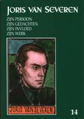In deze
jaarboekaflevering komt vooreerst Joris
van Severen
zelf aan het woord.
Zijn oorlogsdagboek Die vervloekte oorlog
eindigde op 11 november 1918, de dag van de Wapenstilstand. Vorig
jaar
namen we zijn dagboeknotities op van 12 november tot einde 1918. Dit
jaar
brengen we de integrale
dagboeknotities
van het jaar
Uit de dagboekbladzijden van 1919 blijkt
hoezeer Van Severen op de hoogte
was van de toenmalige actualiteit. Soms beperken zijn notities zich tot
geheugensteuntjes, maar vaak ook spuit hij breedvoerig zijn gal over
het reilen
en zeilen van zijn medestrijders binnen de Vlaamse Beweging – en tegen
de
Belgische on-staat.
Ook zijn getormenteerde liefdesrelatie met
Germaine Duccobu biedt stof
tot menige zelfbespiegeling, waarbij de “ups en downs” elkaar opvolgen
als eb
en vloed. Goethes
“Himmelhoch jauchzend, Zum Tode betrübt,
Glücklich ist die Seele die liebt” (Egmont)
is nooit ver weg.
Alsnog blijvend, als reeds ingezet in zijn
oorlogsdagboek Die vervloekte oorlog, blijkt zijn
sympathie voor het bolsjewisme te zijn, dat hij ervaart als een
bevrijdingsbeweging,
als een alternatief voor, een afrekening met het kapitalisme en het
imperialisme van de grootmachten. Hij ziet het bolsjewisme als “een
slag van de
grote slinger der rechtvaardigheid Gods, tegen de rijken. Daarom kan ik
het
niet bevechten, integendeel. Als men aan de kant van de armen staat,
heeft men
altijd gelijk” (4 juni 1919).
We zijn er ons van bewust dat ook deze
dagboekbladzijden mogelijkheden te
over bieden om bepaalde fragmenten uit hun context te isoleren (en
aldus hun
draagwijdte te vervalsen), teneinde er denigrerende commentaren over te
spuien.
Dit procedé – men zij het steeds indachtig – vertelt evenwel meestal
méér over
de geborneerdheid van de commentator dan wel over Joris van Severen
zelf.
Aansluitend op Van Severens Dagboek 1919,
waagt
Verder is dit veertiende jaarboek in hoge
mate schatplichtig aan ons
effectief bestuurslid, de historicus Ruud
Bruijns. Als in de vorige jaarboeken spitst hij ook nu weer zijn
aandacht
toe op de Noord-Nederlandse tak van Van Severens beweging. Hij brengt
ons
vooreerst een grondige casestudie over de
Utrechtse afdeling van het Verdinaso en vervolgens – als
tegenhanger van
wat
Aansluitend komt Henri Bruning
(1900-1983) aan het woord. Hij kreeg recent ook zijn lemma op de
internetencyclopedie Wikipedia, waar
we over hem het volgende meegedeeld krijgen: “De katholieke
schrijver Henri Bruning debuteert in
1924 met de dichtbundel De Sirkel. Sinds 1934 is hij actief in
de
katholiek-solidaristische
beweging Verdinaso.
Deze organisatie was in
Omwille van zijn collaboratie tijdens de
Tweede Wereldoorlog werd hem
publicatieverbod opgelegd en trachtte men hem monddood te maken. In
1954 poogde
Bruning de omerta rond zijn persoon te doorbreken met zijn essay Een ander spoor… in het
belangwekkende
tijdschrift Maatstaf. Daarin zet hij
uiteen hoe en waarom ook in Nederland een vleugel van het Verdinaso in
de
collaboratie belandde. Maar vooral verduidelijkt Bruning in dit verhaal
het hoe
en waarom van zijn toetreding in 1934 tot het Verdinaso en de
fascinatie die
Joris van Severen en zijn beweging op hem uitgeoefend hebben. Zijn
eersterangs-getuigenis meenden we u niet te mogen onthouden.
Het dit jaarboek afsluitend gedicht in
Memoriam Joris van Severen werd ontleend aan de door Antoon van de
Plaetse
in 1942 uitgegeven verzamelbundel Het
lied der Geuzen. De auteur Fernand
Pauwels (pseudoniem Marnix van Gavere)
was gehuwd met Jeanne van
Severen,
de zus van Joris.